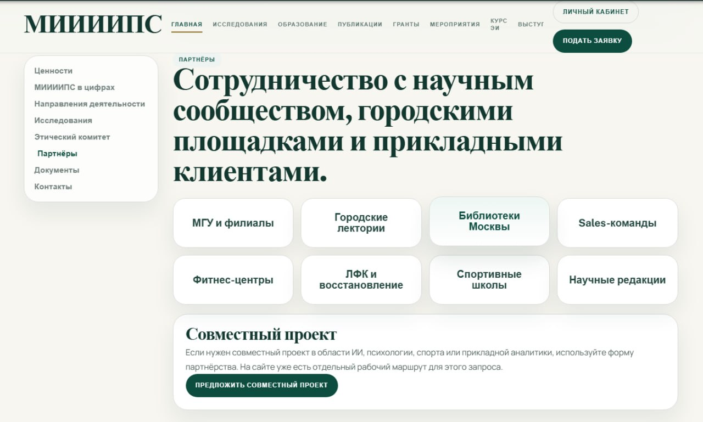

Понедельничная лекция
О лекции
Ключевые положения
Похожие маршруты
Быстрая психология
Открытая лекция в цикле понедельничных встреч института.
О психологическом контексте встречи
Открытая лекция в цикле понедельничных встреч института.
Открытая лекция в цикле понедельничных встреч института.
Открытая лекция в цикле понедельничных встреч института.